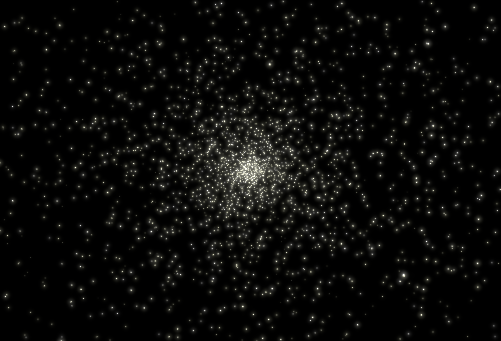

link to this page
Settlement timeline of the Stareater Expanse

The Stareater Expanse is a globular cluster named after the intents of the settlers that arrived in it.
The densely packed cluster creates ideal conditions for interstellar travel, with stars commonly being as little as 0.1ly apart from their closest neighbours.
timeline of initial events relevant to the settling of the Stareater Expanse with dates given in megaseconds and gigaseconds.
- -632Ms : Pioneer enters the Stareater Expanse
- -315Ms : Pioneer executes a gravity assist with the central black hole of the globular cluster, slowing down and adjusting course towards the most fertile system detected
- -1.8Ms : Pioneer executes final slowdown burn in the target system and sets course for the asteroid belt
- -0.6Ms : self-replicating swarms begin to eat through the asteroid belt to set up power collection and industrial infrastructure
- time zero : first permanent navigation beacon
- initial exponential growth phase is established with infrastructure doubling time of approx. 10.5Ms
- +211.6Ms : power generation crosses 100 Gigawatts - 0.5 on the kardashev scale
First habitat construction projects begin
- +250Ms : Cloning of an initial human population started
- +386.6Ms : power generation crosses 10 Petawatts - 1 on the kardashev scale
- +519.6Ms : initial growth phase concludes with 1.344 on the kardashev scale as the easily accessible resources in the asteroid belt are depleted, infrastructure doubling time falls significantly
- +900Ms : first batches of cloned humans reach maturity
- 1Gs : expansion age
- interstellar spacecraft with volunteer colonists are launched to several of the most promising systems in the Stareater Expanse
seeds of divergence are planted and humanity continues it's long march towards all enlightenments and apocalypses
- +1.1Gs : first spacecraft arrive and begin developing their target systems
- +1.3Gs : first multicelular xenobiota encounter
- +1.6Gs : first batches of naturally born humans reach maturity
- +1.8Gs : last of the first wave interstellar spacecraft arrive at their target systems
second multicelular xenobiota encounter
- 2Gs : emergence age
- systems settled in the first expansion wave begin to send out their own interstellar missions
Interstellar transport and communication networks begin to form across the center of the Stareater Expanse
- +2.1Gs : Tarici de-extinction success
- +2.5Gs : near stars outside of the Stareater Expanse begin to receive first settlers
- 3Gs : coalescence age
- first systems settled during the emergence age begin to engage in interstellar activity
revived xenobiota spreads throughout the cluster and integrates into society
relevant pages